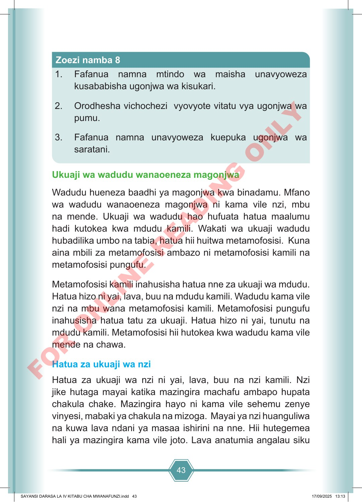

43 1. Fafanua namna mtindo wa maisha unavyoweza kusababisha ugonjwa wa kisukari. 2. Orodhesha vichochezi vyovyote vitatu vya ugonjwa wa pumu. 3. Fafanua namna unavyoweza kuepuka ugonjwa wa saratani. Zoezi namba 8 Ukuaji wa wadudu wanaoeneza magonjwa Wadudu hueneza baadhi ya magonjwa kwa binadamu. Mfano wa wadudu wanaoeneza magonjwa ni kama vile nzi, mbu na mende. Ukuaji wa wadudu hao hufuata hatua maalumu hadi kutokea kwa mdudu kamili. Wakati wa ukuaji wadudu hubadilika umbo na tabia, hatua hii huitwa metamofosisi. Kuna aina mbili za metamofosisi ambazo ni metamofosisi kamili na metamofosisi pungufu. Metamofosisi kamili inahusisha hatua nne za ukuaji wa mdudu. Hatua hizo ni yai, lava, buu na mdudu kamili. Wadudu kama vile nzi na mbu wana metamofosisi kamili. Metamofosisi pungufu inahusisha hatua tatu za ukuaji. Hatua hizo ni yai, tunutu na mdudu kamili. Metamofosisi hii hutokea kwa wadudu kama vile mende na chawa. Hatua za ukuaji wa nzi Hatua za ukuaji wa nzi ni yai, lava, buu na nzi kamili. Nzi jike hutaga mayai katika mazingira machafu ambapo hupata chakula chake. Mazingira hayo ni kama vile sehemu zenye vinyesi, mabaki ya chakula na mizoga. Mayai ya nzi huanguliwa na kuwa lava ndani ya masaa ishirini na nne. Hii hutegemea hali ya mazingira kama vile joto. Lava anatumia angalau siku SAYANSI DARASA LA IV KITABU CHA MWANAFUNZI.indd 43 SAYANSI DARASA LA IV KITABU CHA MWANAFUNZI.indd 43 17/09/2025 13:13 17/09/2025 13:13 F O R O N L I N E R E A D I N G O N L Y